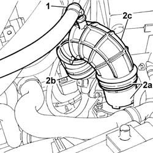

1048A50 air inlet pipe to turbocharger - r + r
- Path
- Procedures > 10 ENGINE > 1048 ENGINE AIR SUPPLY CIRCUIT > 1048A VACUUM AIR CIRCUIT > 1048A50 air inlet pipe to turbocharger - r + r
- Kind
- repair procedure (removal / refitting; the operation number is the code)
- Applies to
- engines: 2.4 JTD 10V; all production periods
- Interactive page
- https://sloeber94.github.io/elrnDB-lThss/en/#/100223
Applies to: engines: 2.4 JTD 10V; all production periods
 Removing
Removing
 Refitting
Refitting1. Disconnect the oil vapour recovery pipe from the connector on the hose.
2. Disconnect the pipe (2a) from the air flow meter (2b) and from the turbocharger air intake hose (2c), then remove it.

Applies to: engines: 2.4 JTD 10V; all production periods
Refitting
Removing- Fit the air inlet pipe and connect it to the air flow meter and to the turbocharger air intake hose.
- Connect the engine oil vapour recovery pipe to the air inlet pipe.